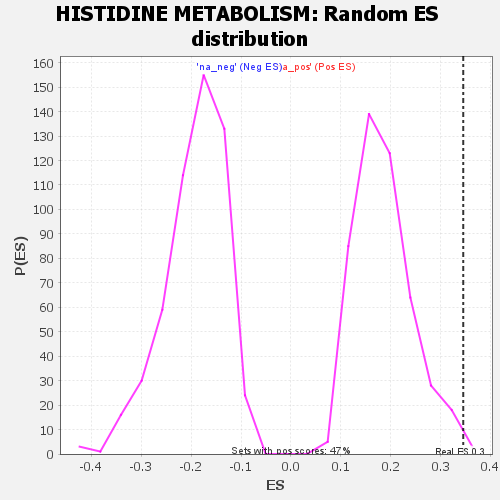

| | | Dataset | GSEA RNK clr Maaslin2 MucosalvsLuminal KO - SI.rnk |
| Phenotype | NoPhenotypeAvailable |
| Upregulated in class | na_pos |
| GeneSet | HISTIDINE METABOLISM |
| Enrichment Score (ES) | 0.34542084 |
| Normalized Enrichment Score (NES) | 1.8567133 |
| Nominal p-value | 0.006451613 |
| FDR q-value | 0.03509427 |
| FWER p-Value | 0.46 |
Table: GSEA Results Summary
 Fig 1: Enrichment plot: HISTIDINE METABOLISM
Fig 1: Enrichment plot: HISTIDINE METABOLISM
Profile of the Running ES Score & Positions of GeneSet Members on the Rank Ordered List

Fig 2: HISTIDINE METABOLISM: Random ES distribution
Gene set null distribution of ES for HISTIDINE METABOLISM